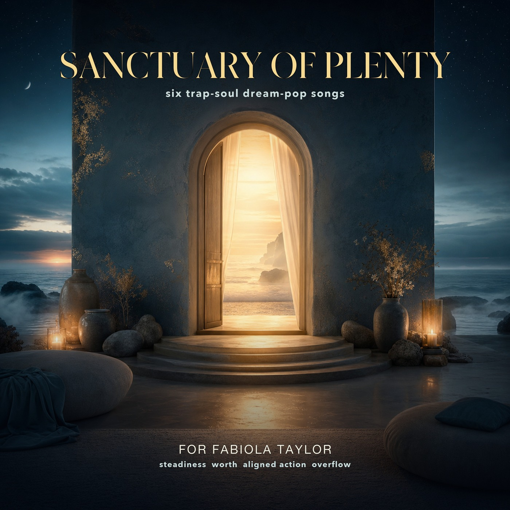

01
Soft Landing
Safety and permission to receive more good.
A private Healing Sanctuary dedication
Six trap-soul dream-pop songs created for Fabiola Taylor, with love: a soft place for steadiness, worth, aligned action, and overflow.

For Fabiola
Fabiola, I wanted to give you something that was not just bought, not just useful, and not just pretty. I wanted to make something with intention in it.
This album is built around the way I see you: steady, brilliant, generous, tender, powerful, and worthy of receiving good without having to brace for it.
Each song is a doorway: safety, worth, money feeling peaceful, open opportunities, aligned action, and overflow. I hope it feels like the world got quiet for a moment and said your name gently.
I love you. I am rooting for everything that wants to bloom in you.
Listen
These songs are meant as a personal ritual for settling, remembering worth, and moving toward the next good thing with more ease.
Safety and permission to receive more good.
Unforced confidence and calm self-trust.
A steadier relationship with resources and receiving.
Readiness, opportunity, and clear-eyed possibility.
Turning vision into movement without panic or force.
Gratitude, service, and abundance that stays rooted.
A gentle note
This private audio sanctuary is offered as music, love, and intention. It is not medical care, financial advice, or a promise of outcomes. It is a beautiful place to breathe, remember, and begin again.